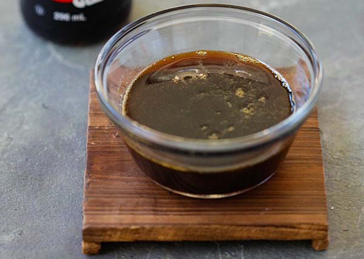

Teriyaki Marinade

Description
Teriyaki sauce is a wonderful balance of ginger, garlic and soy. Use this marinade to enhance your meat!
Ingredients
- 1 cup soy sauce
- 1/2 cup vinegar
- 2 garlice cloves, minced
- 1 tsp ground ginger
- 4 tbsp brown sugar
- 4 tbsp finely chopped white onion
- 2 tbsp canola oil
- 1/2 tsp pepper
Steps
- Mix all of the ingredients in a small bowl.
- To marinate your meat, place your meat in a zip lock bag with the marinade. Place in fridge overnight.